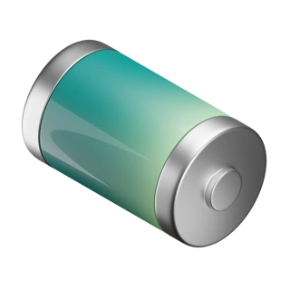

<div class="flex pt-2 ps-2 pe-2">
  <ion-item [style.border-color]="publicProfileService.myMatePublicProfile?.preferedColor"
    class="w-full border shadow-md backdrop-blur-3xl bg-opacity-10 rounded-3xl drop-shadow-sm" color="translucent"
    [lines]="'none'">
    
    <div class="flex flex-col">
      <ion-chip [outline]="true" (click)="onClickLocation()">
        <ion-avatar>
          
        </ion-avatar>
        <ion-label class="self-center ">{{publicProfileService.myMatePublicProfile?.lastLocation}}</ion-label>
      </ion-chip>
      <ion-chip [outline]="true">
        <ion-avatar>
          
        </ion-avatar>
        <ion-label class="self-center">{{publicProfileService.myMatePublicProfile?.lastBatteryPercentage}} %</ion-label>
      </ion-chip>
    </div>
  </ion-item>
</div>